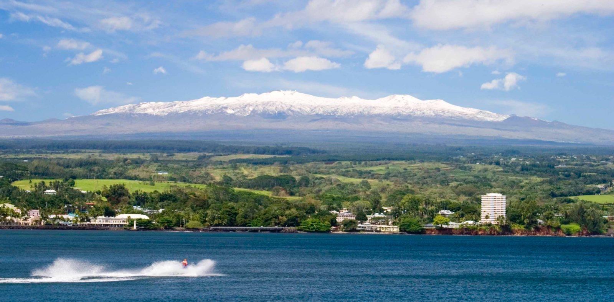
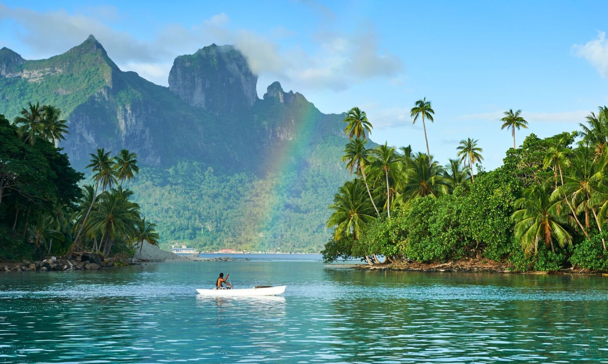
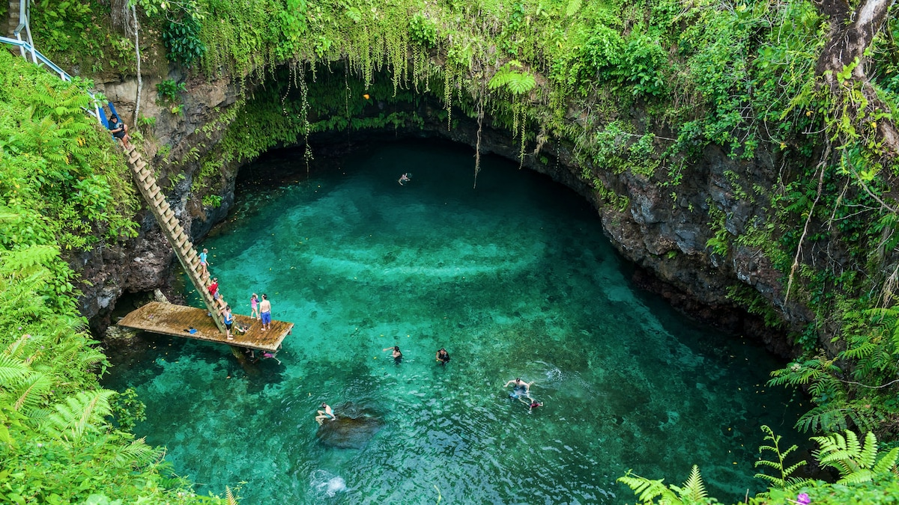
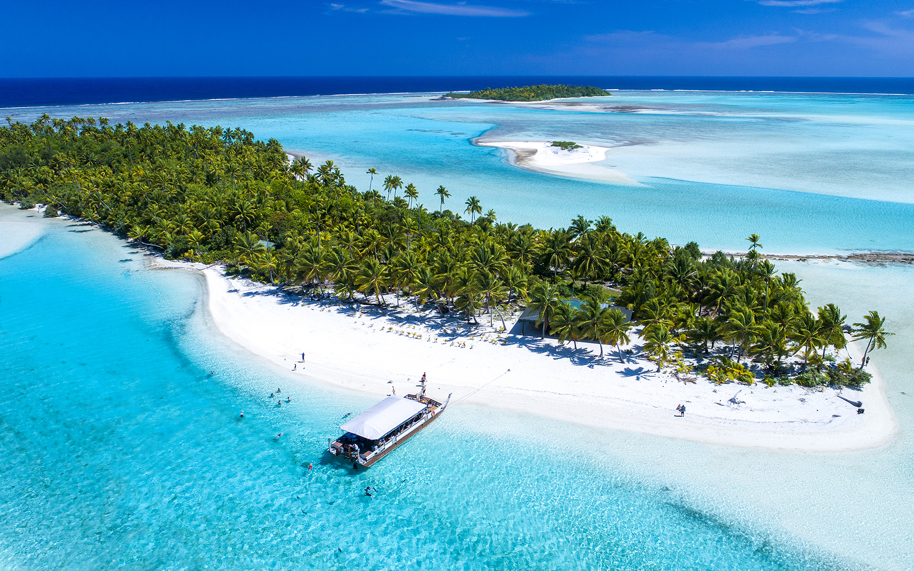
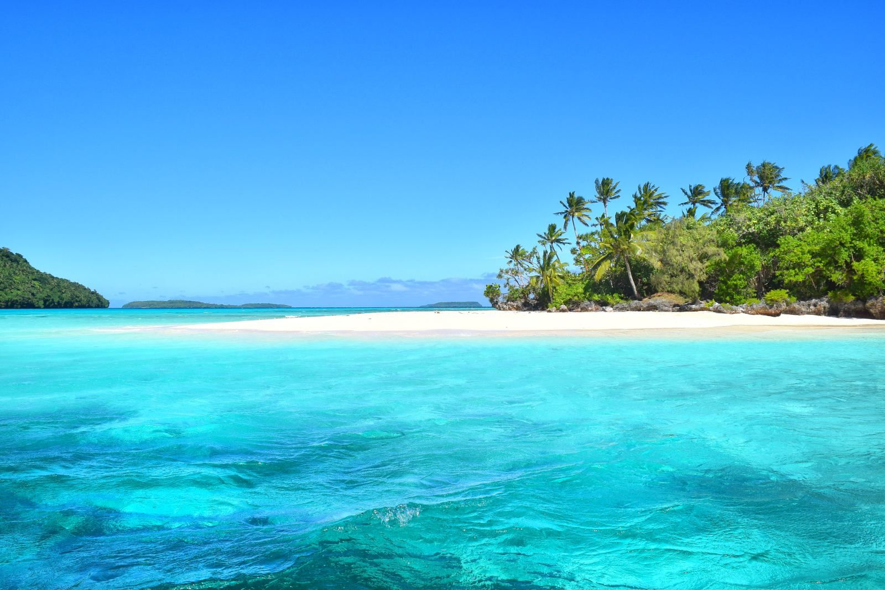
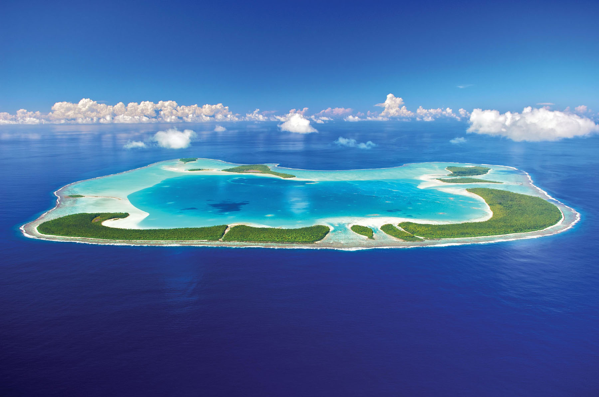
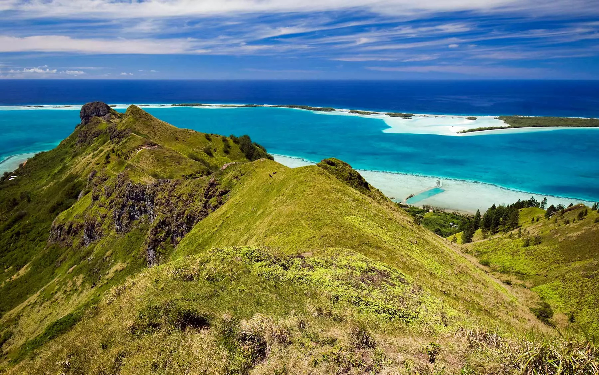
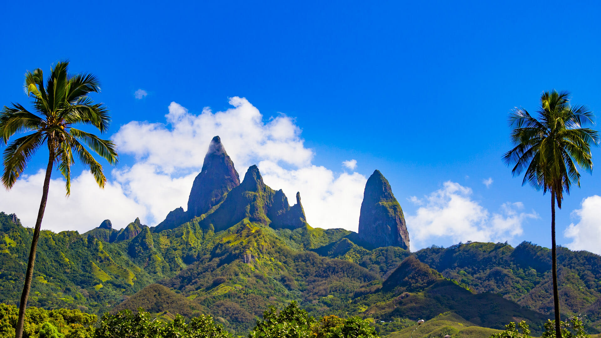

Explore the Islands of Polynesia
The islands of the eastern Pacific are known as Polynesia, from the Greek for "many islands." Set within a triangle formed by Aotearoa (New Zealand) in the south, Hawaii to the north and Rapa Nui (Easter Island) in the east, the Polynesian islands are dotted across the vast eastern Pacific Ocean.
The Hawaiian Islands
Hawaii is the world’s largest island chain, and it’s the only U.S. state completely made up of islands. But only 7 of its 132 islands are inhabited: Hawaii (also known as the Big Island), Maui, Molokai, Lanai, Oahu, Kauai, and Niihau. The Hawaiian Islands are volcanic islands. They have formed as the Earth’s crust, made up of giant rocky slabs called tectonic plates, moves over a particularly hot spot in the molten layer beneath the crust. The heat melts the rock that makes up the crust, turning it into magma. Then once the magma breaks through to the surface of the Earth’s crust it cools and forms new land. The Earth’s crust is always moving just a little bit, but the hot spot that produces magma isn’t. So over time as the crust moved, but the hot spot remained—creating a series of volcanic islands. Hawaii’s most active volcano is Kilauea, and you can see it at Hawai'i Volcanoes National Park on the Big Island. Kilauea has been erupting for over 30 years, and each year, its lava expands Hawaii by over 40 acres. Hawaii is known for its beautiful beaches—some of them with unusual colors. Many beaches are filled with white sand, but other Hawaiian shores are covered with green, red, pink, and even black sand. Whether you like hiking, biking, kayaking, sailing, swimming, or just sitting on the beach, Hawaii is the state for you. Near the water, you can relax as palm trees blow in the island breeze. Travel toward the center of one of the big islands and you can hike through dense tropical rain forests and experience stunning waterfalls. Don’t forget to dive in the waters and snorkel near Hawaii’s coral reefs. On Hawaii you can experience yet another environment: the volcano Mauna Loa’s dry lava is so much like parts of the moon’s surface that astronauts once walked on it to practice for lunar voyages. Mount Waialeale on Kauai is considered one of the rainiest spots on Earth, getting 384 inches of rain a year on average.
The Society Islands
This island chain was given its name by Captain Cook, as a tribute to the Royal Society of London who sponsored his first voyage there in 1769. It is both the demographic and economic heart, being home to 87% of the population (243,290 inhabitants in 2017) and provides more than 90% of the region’s GDP. The Society Islands are separated into two groups: the Windward Islands and the Leeward Islands. The Windward Islands The group consists of four high islands: Tahiti, Moorea, Mehetia, Maiao and one atoll, Tetiaroa. All are inhabited (except Mehetia, where access is restricted) and their combined population of 207,330 people (primarily on Tahiti and Moorea) represents ¾ of the total population of French Polynesia. The capital (Papeete) is found on the island of Tahiti (which of itself makes up a quarter of French Polynesia’s land surface), as well as Faa’a International Airport, the regional port, and numerous administrative services, the university, the hospital, museums, industrial zones and most businesses … It is also the arrival point for international tourists visiting The Islands of Tahiti. Moorea, the nearby sister island, is a well-known tourist destination. The Leeward Islands These 9 islands (with around 35,000 inhabitants) in the western part of the Society Islands include: Huahine, Raiatea, Taha’a, Bora Bora, as well as Tupai and Maupiti; as well as three atolls: Mopelia, Scilly and Bellinghausen. The Leeward Islands get their name from their position relative to the trade winds. They have a total surface area of 430 km² (166 mi²). Geologically older than the Windward Islands, they are each surrounded by huge reefs, which gradually transformed into atolls, over several million years. The motu (islets) that perch atop the reefs and the colours of the lagoons are the main tourist attractions. Bora Bora has its reputation as the “Pearl of the Pacific”, and the Taputapuatea marae, a sacred site on Raiatea, has been listed as UNESCO World Heritage.
Samoa
Samoa is an island nation in the South The main islands are the result of countless volcanic eruptions, leaving easily visible volcanic cones all over both islands. None of the volcanoes are currently active, but small earthquakes often rock the island, reminding people of the volcanoes' presence. In September 2009 the south coast of Upolu Island was hit by a devastating tsunami, with much loss of life. The last volcanic eruption was in 1911, on Savaii. The eerie, lifeless lava fields that remain from this event can be visited easily, since the only sealed road on Savai'i goes right through the middle. Both islands are almost entirely covered by lush vegetation, although almost none of it is the original rainforest that covered the island before humans arrived. Most of the land area is given over to farms or semi-cultivated forest, providing food and cash crops for the locals. Since Samoa has been inhabited for over three thousand years, the cultivated lands around villages can often seem like the deepest, darkest jungle.
Cook Islands
The Cook Islands are a self-governing parliamentary democracy in free association with New Zealand, located in Polynesia, in the middle of the South Pacific Ocean, between French Polynesia (Society Islands) to the east and Tonga to the west. This archipelago has 15 inhabited islands spread out over 2.2 million square kilometres of ocean with no land between the tropical Cook Islands and Antarctica. With the same time zone and latitude (south, rather than north) as Hawaii, the islands are sometimes thought of as "Hawaii down under". Though smaller, it reminds some elderly visitors of Hawaii before statehood without all the large tourist hotels and other development. Named after Captain Cook, who conquered them in 1770, the islands became a British protectorate in 1888. By 1900, administrative control was transferred to New Zealand; in 1965 residents chose self-government in free association with New Zealand. New Zealand handles defence, foreign affairs (including issuing passports) and currency; otherwise the islands are self-governing. This includes immigration, which is strictly controlled -- even for non Cook Island New Zealanders.
Tonga
Tonga, the "Friendly Islands", is an archipelago in the South Pacific Ocean. The country is divided into four island groups, or regions. Tonga is one of the last absolute monarchies in the world and is based upon an essentially feudal system where the king disburses land and positions without recourse to any elected body. Although Tongan royalty is largely loved and revered by Tongans, younger people have an appetite for stronger accountability and a more modern constitution. An election was held in November 2010. This was planned to lead to a major reduction in the powers of the King and the land-owning nobility in favour of a more democratic form of governance. However, of the 26 seats in Parliament only 17 are elected, with the rest being allocated to the nobles. After some horse trading, it was a noble who emerged as the Prime Minister. Tonga has an economy with none of the corporate chain stores and with local small businesses providing all necessary goods and services. Tourists were not a target during the riots and you will find Tonga a friendly and appealing place to visit although don't expect the same level of infrastructure as in more developed countries.
French Polynesia Atolls
French Polynesia contains 85 of the world’s 425 atolls. Seventy seven of these are in the Tuamotu Archipelago, forming the largest chain of atolls in the world, roughly the size of Western Europe. The rest are spread throughout the tropics, primarily in the Pacific and Indian Ocean, with a few in the Atlantic. The definition of an atoll varies widely. They tend to be circular, oval or horseshoe-shaped arrays of low-lying coral islets perched around a volcanic seamount and enclosing a central lagoon. Rangiroa fits nicely to Charles Darwin’s theory. He concluded that an atoll forms around a volcanic island that becomes extinct. As the volcano cools it becomes denser and begins sinking into the water. Coral grows around the rim of the volcano, upward, to form a fringing reef.
Austral Islands
Discovered by Europeans in the 18th Century, the Austral Islands are located 373 miles (600 km) south of Tahiti’s capital city Papeete. The archipelago is made of seven islands, five of which are inhabited and four of which are accessible by air. An untouched and mysterious land where white sand beaches clash with the intense blue of the lagoons, the Australs Islands are off the beaten track, offering a memorable and unique experience in The Islands of Tahiti. A visit to the islands reveals breathtaking landscapes. From sheer mountains to valleys and high plains featuring the Austral Islands famous farming activities. Quite a few archeological remnants hide on each island, bearing witness to a well organized pre-European community of rich cultural and religious practices. The cliffs and caves of the Austral Islands are places of legends in French Polynesia. These areas used to be old burial grounds but are now a place to watch humpback whales frolic in the waters just offshore. The whales come to the Austral Islands from August to October each year to give birth. These contrasting sceneries blend well with the friendliness of the inhabitants. Visit colorful, picturesque villages to discover the handiwork of islanders who mainly live off their artwork. Also enjoy watching fishermen, farmers and basket weavers at work. You’re not likely to leave without a hat or woven basket to remind you of your magical time in the Austral Islands. The Austral Islands offer a rare opportunity to discover The Islands of Tahiti in a different light.
Marquesas Islands
Imagine seeing rays of sunshine filter through the clouds over sharp mountain peaks, creating a scene you’ve only experienced in a photo or painting. Luscious islands emerge from the Pacific Ocean, a land of history and legends, each one more fascinating and unforgettable than the last. Welcome to the magnificent Marquesas Islands. The Marquesas are an archipelago located 932 miles (1,500 km) northeast of Tahiti and spread out over 12 islands, of which only six are inhabited. Surrounded by steep cliffs, the coasts of the Marquesas Islands are a mix of black sand beaches and gorgeous bays. From Taipivai Valley and Hatiheu Bay to Anaho and Hakaui, where Vaipo, the highest waterfall in The Islands of Tahiti is located, a traveler is invited to admire cultural and natural phenomena. In the lush rainforest, where thousands of pre-European artifacts lie, you’ll discover wild horses, goats, boars and other wildlife. Marquesans are revered as the finest craftsmen in French Polynesia. Their creations include carvings, intricate tattoos, and even traditional jewelry.